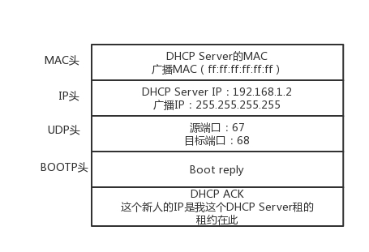

1. IP协议#
root@test:~# ip addr
1: lo: <LOOPBACK,UP,LOWER_UP> mtu 65536 qdisc noqueue state UNKNOWN group default
link/loopback 00:00:00:00:00:00 brd 00:00:00:00:00:00
inet 127.0.0.1/8 scope host lo
valid_lft forever preferred_lft forever
inet6 ::1/128 scope host
valid_lft forever preferred_lft forever
2: eth0: <BROADCAST,MULTICAST,UP,LOWER_UP> mtu 1500 qdisc pfifo_fast state UP group default qlen 1000
link/ether fa:16:3e:c7:79:75 brd ff:ff:ff:ff:ff:ff
inet 10.100.122.2/24 brd 10.100.122.255 scope global eth0
valid_lft forever preferred_lft forever
inet6 fe80::f816:3eff:fec7:7975/64 scope link
valid_lft forever preferred_lft forever
10.100.122.2是一个IP地址，inet6 fe80::f816:3eff:fec7:7975/64是IPv6地址。IP地址分为五类：

D类是组播地址，使用这一类地址，属于某个组的机器都能收到。
下面这个表展示了ABC三类地址所能包含的主机的数量：

C类地址只能包含254的主机，而B类地址又太大了，能包含65534个主机，因此采用了CIDR方式进行优化
1.1 CIDR 无类型域间选路#
1.1.1 CIDR的斜杆+数字的表示方式#
这种方式打破了上述的分成几类地址的方式，将32位地址一分为二，前面是网络号，后面是主机号，例如：
10.100.122.2/24
斜杠和24表示对于这个32位地址而言，前24位是其网络号，后8位是其主机号。
1.1.2 广播地址#
继续以上述的地址为例，其广播地址为
10.100.122.255
如果发送这个地址，所有10.100.122网络里的机器都可以收到
1.1.3 子网掩码#
继续以上述的地址为例，其子网掩码为
255.255.255.0
与IP地址按位与，就可以得到网络号
1.2 公有IP地址和私有IP地址#
这是按类对IP地址进行划分的时候的概念，私有地址，即允许组织内部的IT人员自己进行管理分配的地址。公有IP的资源有组织统一分配的，需要去买。

表格中就有我们很常见的192.168.0.0,一般来说，整个网络的第一个地址192.168.0.1就是你这个私有网络的出口地址，比如你家的路由器地址就是这个；而192.1678.0.255就是广播地址。
1.3 动态主机配置协议(DHCP)#
网络管理员需要做的是，配置一段共享的IP地址，每一台新接入的机器都会通过DHCP协议，来这个共享的IP地址里申请，然后自动配置好。
1.3.1 DHCP的工作方式#
- 新机器加入进网络 – DHCP discover
新机器使用IP地址0.0.0.0发送一个广播包，目的IP地址是255.255.255.255. 广播包封装了UDP， UDP封装了BOOTP，DHCP是BOOTP的增强版。
在这个广播包里，新机器会说我是新来的(Boot Request), 我的MAC地址是blabla，我还没有IP地址，需要租一个！

- DHCP offer
DHCP server 为客户保留一个IP地址，不会再给别的客户用这个IP地址了。DHCP的offer的格式如下，里面有给新人分配的地址：

这个时候仍然使用广播IP作为目的地址，因为此时新机器还没有IP地址呢。值得注意的是，有可能在配置的时候会有多个DHCP server，这个新机器可能收到多个DHCP Offer，新机器会选择一般是最近的一个，然后向网络发送一个告知信息的信息包，成为DHCP request
- DHCP request
这个广播数据包里面包含客户端的MAC地址，接受的租约中的IP地址，提供此租约的DHCP服务器地址等信息。

注意这个时候新机器的IP还没有得到确认，所以客户端仍然使用0.0.0.0作为源地址
- DHCP ACK
当DHCP server接收到客户机的DHCP request之后，会广播返回给客户机一个DHCP ACK消息，表示已经接受客户机的选择

1.3.2 IP地址的收回和续租#
客户机会在租期过去 50% 的时候，直接向为其提供 IP 地址的 DHCP Server 发送 DHCP request 消息包。客户机接收到该服务器回应的 DHCP ACK 消息包，会根据包中所提供的新的租期以及其他已经更新的 TCP/IP 参数，更新自己的配置。这样，IP 租用更新就完成了。
1.3.3 DHCP协议- 自动安装操作系统 - PXE(预启动执行环境)#
其实，这个过程和操作系统启动的过程有点儿像。首先，启动 BIOS。这是一个特别小的小系统，只能干特别小的一件事情。其实就是读取硬盘的 MBR 启动扇区，将 GRUB 启动起来；然后将权力交给 GRUB，GRUB 加载内核、加载作为根文件系统的 initramfs 文件；然后将权力交给内核；最后内核启动，初始化整个操作系统。那我们安装操作系统的过程，只能插在 BIOS 启动之后了。因为没安装系统之前，连启动扇区都没有。因而这个过程叫做预启动执行环境（Pre-boot Execution Environment）
PXE协议会先把客户端放到BIOS里面，当计算机启动的时候，BIOS把PXE客户端调入内存里面，就可以连接到服务端做一些操作了。
首先，PXE 客户端自己也需要有个 IP 地址。因为 PXE 的客户端启动起来，就可以发送一个 DHCP 的请求，让 DHCP Server 给它分配一个地址。PXE 客户端有了自己的地址，那它怎么知道 PXE 服务器在哪里呢？对于其他的协议，都好办，要么人告诉他。例如，告诉浏览器要访问的 IP 地址，或者在配置中告诉它；例如，微服务之间的相互调用。
但是 PXE 客户端启动的时候，啥都没有。好在 DHCP Server 除了分配 IP 地址以外，还可以做一些其他的事情。这里有一个 DHCP Server 的一个样例配置：
ddns-update-style interim;
ignore client-updates;
allow booting;
allow bootp;
subnet 192.168.1.0 netmask 255.255.255.0
{
option routers 192.168.1.1;
option subnet-mask 255.255.255.0;
option time-offset -18000;
default-lease-time 21600;
max-lease-time 43200;
range dynamic-bootp 192.168.1.240 192.168.1.250;
filename "pxelinux.0";
next-server 192.168.1.180;
}
按照上面的原理，默认的 DHCP Server 是需要配置的，无非是我们配置 IP 的时候所需要的 IP 地址段、子网掩码、网关地址、租期等。如果想使用 PXE，则需要配置 next-server，指向 PXE 服务器的地址，另外要配置初始启动文件 filename。

2. ICMP协议#
ping的工作原理，ping是基于ICMP协议来工作的，ICMP全称为: Internet Control Message Protocol，就是互联网控制报文协议。
ICMP报文是封装在IP包里面的。如图所示

2.1 查询报文类型#
ICMP主动发起的，对于ping的主动请求，进行网络抓包，称为ICMP ECHO REQUEST. 同理主动请求的回复称为ICMP ECHO REPLY. 比起原生的ICMP多了标识符和序号两个字段。
2.2 差错报文类型#
- 终点不可达 3
- 网络不可达 0
- 主机不可达 1
- 协议不可达 2
- 端口不可达 3
- 需要进行分片但设置了不分片
- 源抑制 4
源站放慢了速度
- 超时 11
超过了网络包的生存时间，但是还没到
- 重定向 5
换下次发送使用的路由器
2.3 Ping的使用 查询报文类型的使用#
下图描述了ping的整个发送和接收过程。
假定主机 A 的 IP 地址是 192.168.1.1，主机 B 的 IP 地址是 192.168.1.2，它们都在同一个子网。那当你在主机 A 上运行“ping 192.168.1.2”后，会发生什么呢?
ping 命令执行的时候，源主机首先会构建一个 ICMP 请求数据包，ICMP 数据包内包含多个字段。最重要的是两个，第一个是类型字段，对于请求数据包而言该字段为 8；另外一个是顺序号，主要用于区分连续 ping 的时候发出的多个数据包。每发出一个请求数据包，顺序号会自动加 1。为了能够计算往返时间 RTT，它会在报文的数据部分插入发送时间。
然后，由 ICMP 协议将这个数据包连同地址 192.168.1.2 一起交给 IP 层。IP 层将以 192.168.1.2 作为目的地址，本机 IP 地址作为源地址，加上一些其他控制信息，构建一个 IP 数据包。
接下来，需要加入 MAC 头。如果在本节 ARP 映射表中查找出 IP 地址 192.168.1.2 所对应的 MAC 地址，则可以直接使用；如果没有，则需要发送 ARP 协议查询 MAC 地址，获得 MAC 地址后，由数据链路层构建一个数据帧，目的地址是 IP 层传过来的 MAC 地址，源地址则是本机的 MAC 地址；还要附加上一些控制信息，依据以太网的介质访问规则，将它们传送出去。
主机 B 收到这个数据帧后，先检查它的目的 MAC 地址，并和本机的 MAC 地址对比，如符合，则接收，否则就丢弃。接收后检查该数据帧，将 IP 数据包从帧中提取出来，交给本机的 IP 层。同样，IP 层检查后，将有用的信息提取后交给 ICMP 协议。
主机 B 会构建一个 ICMP 应答包，应答数据包的类型字段为 0，顺序号为接收到的请求数据包中的顺序号，然后再发送出去给主机 A。
在规定的时候间内，源主机如果没有接到 ICMP 的应答包，则说明目标主机不可达；如果接收到了 ICMP 应答包，则说明目标主机可达。此时，源主机会检查，用当前时刻减去该数据包最初从源主机上发出的时刻，就是 ICMP 数据包的时间延迟。
2.4 traceroute 差错报文类型的使用#
traceroute会故意设置特殊的TTL，来追踪去往目的地沿途经过的路由器。Traceroute 的参数指向某个目的 IP 地址，它会发送一个 UDP 的数据包。将 TTL 设置成 1，也就是说一旦遇到一个路由器或者一个关卡，就表示它“牺牲”了。
如果中间的路由器不止一个，当然碰到第一个就“牺牲”。于是，返回一个 ICMP 包，也就是网络差错包，类型是时间超时。那大军前行就带一顿饭，试一试走多远会被饿死，然后找个哨探回来报告，那我就知道大军只带一顿饭能走多远了。接下来，将 TTL 设置为 2。第一关过了，第二关就“牺牲”了，那我就知道第二关有多远。如此反复，直到到达目的主机。这样，Traceroute 就拿到了所有的路由器 IP。当然，有的路由器压根不会回这个 ICMP。这也是 Traceroute 一个公网的地址，看不到中间路由的原因。
怎么知道 UDP 有没有到达目的主机呢？Traceroute 程序会发送一份 UDP 数据报给目的主机，但它会选择一个不可能的值作为 UDP 端口号（大于 30000）。当该数据报到达时，将使目的主机的 UDP 模块产生一份“端口不可达”错误 ICMP 报文。如果数据报没有到达，则可能是超时。
Traceroute 还有一个作用是故意设置不分片，从而确定路径的 MTU。
要做的工作首先是发送分组，并设置“不分片”标志。发送的第一个分组的长度正好与出口 MTU 相等。如果中间遇到窄的关口会被卡住，会发送 ICMP 网络差错包，类型为“需要进行分片但设置了不分片位”。其实，这是人家故意的好吧，每次收到 ICMP“不能分片”差错时就减小分组的长度，直到到达目标主机。